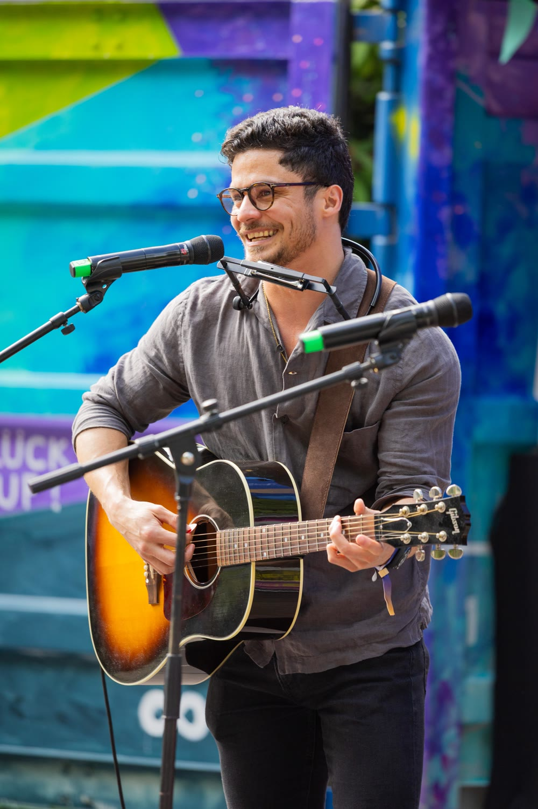
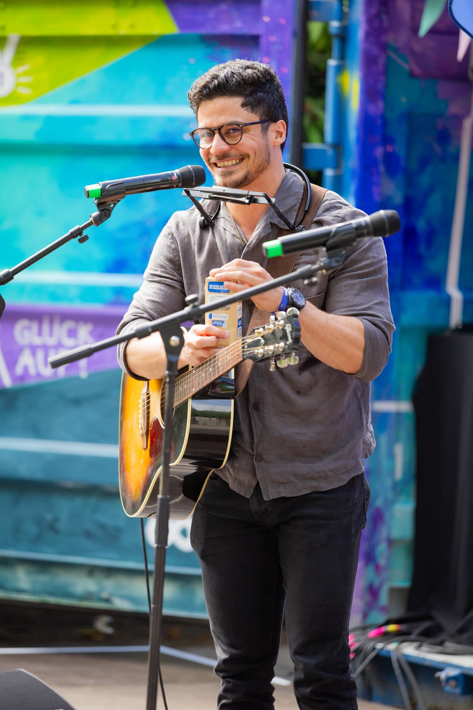

Fischbach, onboarding tool
An onboarding and offboarding webapp for Fischbach’s 1,000+ workforce — coordinating hardware, software licenses, vehicles, access, furniture, insurance, and other resources in one system.
An onboarding and offboarding webapp for Fischbach’s 1,000+ workforce — coordinating hardware, software licenses, vehicles, access, furniture, insurance, and other resources in one system.
Conceptual UX project. I redesigned the way users discover content on YouTube, using data the platform already has but doesn't use for discovery.

Leo is an app for managing construction and housing renovation projects that digitizes the entire project lifecycle — preparation, planning, execution, and closeout — connecting clients, contractors, and subcontractors in real time, from team management to invoicing.

